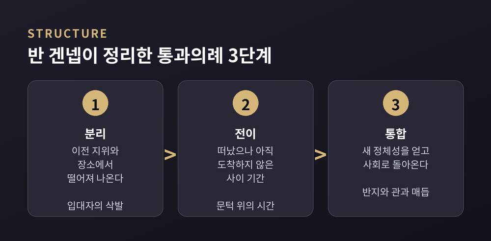
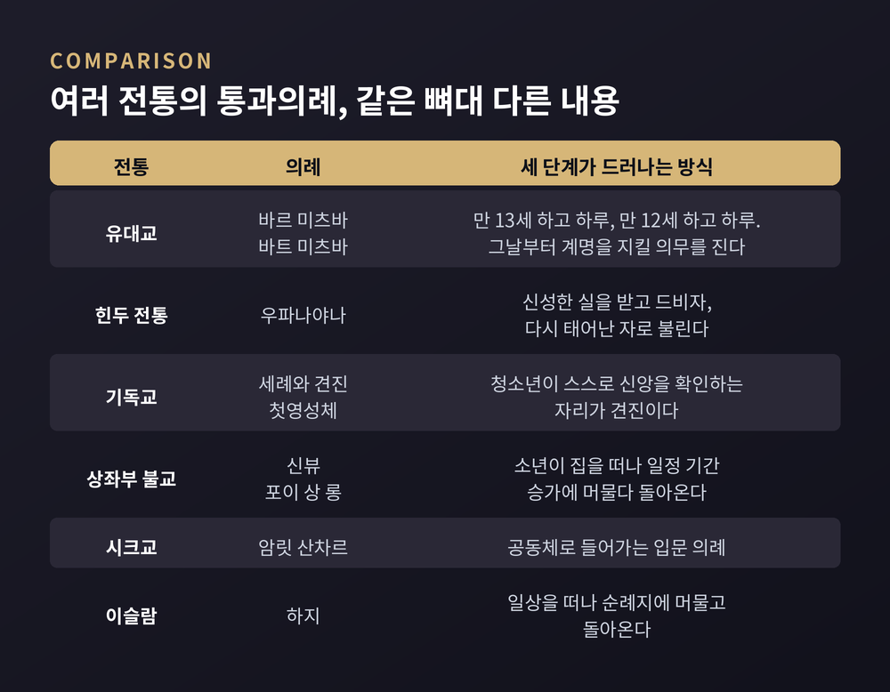
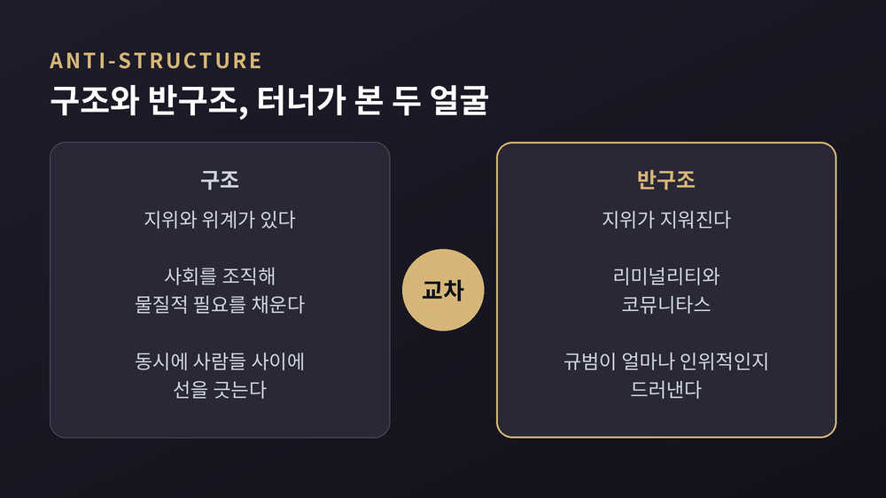
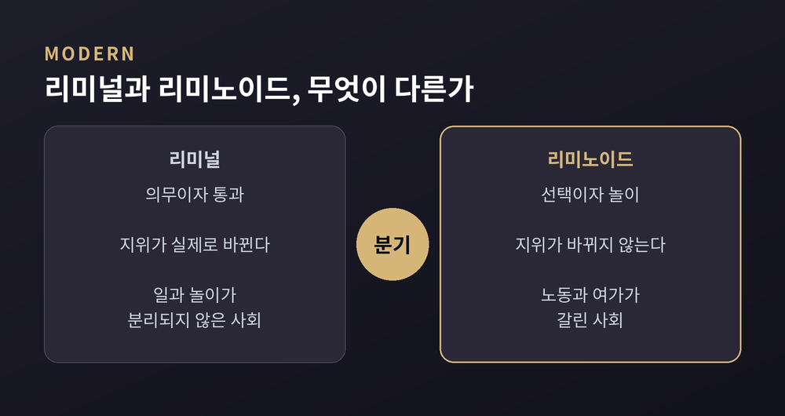
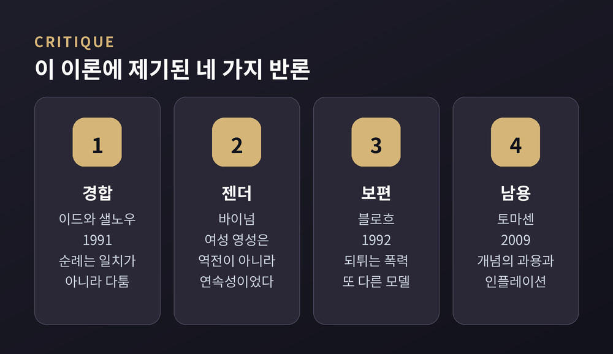

분리와 전이와 통합 — 1909년의 도식이 성인식과 순례를 넘어 졸업식과 입대까지 설명하게 된 과정, 그리고 그 한계
세 줄 요약
이번 글에서는 사람의 인생이 바뀌는 자리마다 놓이는 의례의 구조를 정리해 보겠습니다. 아르놀드 반 겐넵의 3단계 도식을 축으로 삼고, 빅터 터너가 확장한 리미널리티와 코뮤니타스, 그리고 이 이론이 받은 비판까지 함께 놓겠습니다. 어느 종교가 옳은지를 따지는 글이 아니라, 여러 전통에 공통으로 나타나는 형식에 관한 이야기입니다.
출발점은 한 명의 아웃사이더입니다.
아르놀드 반 겐넵은 1873년 독일 뷔르템베르크에서 태어나 1957년에 세상을 떠났습니다. 네덜란드인 아버지와 프랑스인 어머니 사이에서 났고, 생애 대부분을 프랑스에서 보냈습니다. 본인 집계로 18개 언어를 익혔습니다. 딸이 1964년에 정리한 저작 목록에는 437편이 실려 있습니다.
그런데 그는 프랑스에서 단 한 번도 정규 교수직을 얻지 못했습니다.
1912년 스위스에서 얻은 첫 자리는 1차 세계대전과 함께 1년 만에 사라졌습니다. 1908년에 창간한 학술지도 함께 문을 닫았습니다. 친구들은 그를 '부르라렌의 은둔자'라 불렀습니다.
이유는 학문 권력의 지형에 있었습니다. 당대 프랑스 사회학의 중심은 에밀 뒤르켐이었고, 뒤르켐은 반 겐넵을 경쟁자로 보았습니다. 뒤르켐의 1912년 저작 『종교생활의 원초적 형태』는 반 겐넵의 용어도 구분도 쓰지 않았고, 논의 대상으로 삼지도 않았습니다. 마르셀 모스는 1910년 서평에서 『통과의례』를 두고 역사와 민족지를 가로지르는 산책 같다고 평했습니다.
반 겐넵도 물러서지 않았습니다. 1913년 그는 뒤르켐의 원시사회관이 전적으로 오류라고 반박했습니다. 상인과 선교사가 모은 자료를 무비판적으로 받아들였다는 지적이었습니다. 1924년부터 뒤르켐 학파의 학술지는 그의 책을 더 이상 평하지 않았습니다.
두 사람이 갈린 지점은 결국 개인이었습니다. 뒤르켐은 사회의 우선성을 밀어붙였고, 반 겐넵은 어떤 사회에서든 수정을 발명하고 제안하는 것은 개인이라고 보았습니다. 오늘날 행위성이라 부르는 문제를 그가 먼저 건드린 셈입니다.
훗날 인류학자 로드니 니덤은 이 홀대를 두고 학문적 수치라고 표현했습니다.
『통과의례』는 1909년 파리의 에밀 누리 출판사에서 나왔습니다.
반 겐넵 본인은 이 책을 10년 가까이 헤매던 어둠을 걷어낸 내적 조명의 산물이라고 했습니다. 다른 책들에는 큰 애착이 없지만 이 책만은 자기 살의 일부라고도 적었습니다.
그가 사회를 보는 비유는 단순합니다. 사회는 방과 복도로 나뉜 집이고, 통과란 한 방에서 다른 방으로 옮겨가는 일입니다. 그리고 방을 옮길 때마다 사람은 의례를 거칩니다.
그가 찾아낸 순서는 세 단계입니다.
첫째, 분리입니다. 이전 지위와 장소에서 떨어져 나옵니다. 옛 자아를 상징적으로 잘라내는 행위가 흔히 따라붙습니다. 입대자의 삭발이 알기 쉬운 예입니다. 머리카락과 함께 민간인이던 자기를 잘라냅니다.
둘째, 전이입니다. 이전 상태에서는 떠났는데 다음 상태에는 아직 들어가지 못한 사이 기간입니다. 반 겐넵은 이 단계를 라틴어 리멘, 곧 문턱에서 따와 리미널이라 불렀습니다.
셋째, 통합입니다. 새 정체성을 얻고 사회로 돌아옵니다. 반 겐넵은 이 단계에 성스러운 끈, 매듭, 띠, 반지, 팔찌, 관 같은 형태가 널리 쓰인다고 관찰했습니다. 결혼반지 하나가 이 목록의 어디쯤에 놓이는지 짐작하실 만합니다.
용어로는 각각 전리미널 의례, 리미널 의례, 후리미널 의례가 됩니다.

여기서 한 가지는 꼭 덧붙여야 합니다.
반 겐넵은 이 도식을 모든 의례에 기계적으로 들이대지 않았습니다. 세 단계가 어느 의례에서나 똑같이 중요하거나 똑같이 정교하게 발달하지는 않는다고 그는 명시했습니다. 어떤 의례는 분리가 두드러지고, 어떤 의례는 전이가 대부분을 차지합니다. 3분 구조가 전이 기간 안에서 다시 반복되는 경우도 흔하다고 적었습니다.
성과 속의 극단적 이분법에 대해서도 그는 조심스러웠습니다. 그 날카로운 구분 자체가 르네상스 이후 근대의 산물이라는 문장이 책의 셋째 문장에 나옵니다.
패턴을 발견했을 뿐 의례의 개별적 목적을 지우지 않았다는 것. 이것이 이 책을 오래 살아남게 만든 이유입니다.
형식이 같다는 말은 내용이 같다는 뜻이 아닙니다. 그 점을 전제하고, 확인된 사례들을 나란히 놓아보겠습니다.
유대교의 바르 미츠바는 남자가 만 13세 하고 하루, 바트 미츠바는 여자가 만 12세 하고 하루가 되는 시점을 기준으로 삼습니다. 그날부터 종교적 의미에서 성인으로서 계명을 지킬 의무를 집니다.
힌두 전통의 우파나야나는 성사(聖絲), 곧 신성한 실을 받는 입문 의례입니다. 이를 거친 사람은 드비자, 다시 태어난 자로 불립니다. 학습과 영적 수행의 세계로 들어가는 문턱인 셈입니다.
기독교에는 세례와 견진, 첫영성체가 있습니다. 견진은 청소년이 스스로 신앙을 확인하는 자리로, 가톨릭 전통과 여러 개신교 교회에서 두드러집니다.
상좌부 불교권에는 소년의 단기 출가 의례가 있습니다. 미얀마의 신뷰, 샨족 공동체의 포이 상 롱이 그렇습니다. 시크교에는 암릿 산차르가 있습니다.
아프리카의 여러 공동체에서 입문 의례는 인간의 성장과 사회화의 근본으로 여겨집니다. 개인을 공동체에 잇고, 공동체를 더 넓은 영적 세계에 잇는 장치라는 설명입니다.
이슬람의 하지는 생애주기 의례라기보다 순례지만, 통과의례 목록에 함께 오릅니다. 순례 이야기는 뒤에서 다시 하겠습니다.

반 겐넵이 다룬 범위는 생애주기에 그치지 않습니다. 임신과 출산, 약혼과 결혼, 장례가 들어가고, 여기에 영역적 통과도 포함됩니다. 다른 종교가 지배적인 지역으로 국경을 넘는 일 역시 그에게는 통과였습니다.
반 겐넵의 책은 발표 직후 사장되었습니다. 영역본이 나온 것은 1960년, 시카고대학 출판부에서였습니다. 초판으로부터 51년 뒤입니다.
그 책을 다시 살려낸 사람이 빅터 터너입니다.
터너는 1920년 스코틀랜드 글래스고에서 태어나 1983년 미국 버지니아주에서 세상을 떠났습니다. 1949년 맥스 글럭먼이 세운 맨체스터대학 인류학과에서 공부했고, 1950년부터 1954년까지 잠비아의 로즈-리빙스턴 연구소 연구원으로 일하며 은뎀부 족을 조사했습니다. 1955년 은뎀부 연구로 박사학위를 받았습니다.
그가 반 겐넵을 만난 정황이 인상적입니다.
1963년 여름, 터너는 맨체스터를 사직하고 집도 팔았지만 미국 비자가 나오지 않아 발이 묶여 있었습니다. 2차 대전 중 병역을 거부한 전력 때문이었습니다. 가족은 영국해협의 헤이스팅스에 머물며 유예 상태로 지냈습니다. 그 시기에 우연히 『통과의례』를 집어 들었습니다.
문턱에 선 사람이 문턱에 관한 책을 읽은 것입니다.
그 독서는 곧바로 「베트윅스트 앤드 비트윈」이라는 글로 이어졌습니다. 1964년 3월 코넬대학에서 발표했고, 1967년 『상징의 숲』에 수록됐습니다.
터너가 주목한 것은 세 단계 중 가운데였습니다. 그는 리미널 페르소나, 곧 문턱 위의 사람들의 속성이 필연적으로 모호하다고 썼습니다. 신입자를 두고는 이렇게 표현했습니다. 그들은 물리적 실재는 있으나 사회적 실재는 없다고요. 그래서 숨겨져야 한다고요. 거기 있어서는 안 될 것이 보이는 일은 역설이자 스캔들이기 때문이라는 설명입니다.
지위도 이름도 소유도 일시적으로 지워진 상태. 그것이 리미널리티입니다.
『의례의 과정: 구조와 반구조』는 1969년에 나왔습니다. 부제가 이 책의 논지를 그대로 담고 있습니다.
지위가 지워진 자리에서 무엇이 생겨날까요.
터너는 참여자들이 서로를 자발적이고 직접적인 방식으로, 동등한 존재로 경험하는 현상을 관찰했습니다. 그는 이것을 코뮤니타스라고 불렀습니다. 구조 바깥의 인간 대 인간 관계라는 뜻입니다. 은뎀부의 청소년 남성들이 성인식을 위해 부족에서 분리돼 있는 동안 강한 유대를 경험한다는 것이 그가 든 사례입니다.
코뮤니타스는 세 가지로 나뉩니다. 실존적이고 자발적인 코뮤니타스, 그것을 지속 가능한 체계로 바꾼 규범적 코뮤니타스, 유토피아적 이상으로 현 상태를 바꾸려는 이데올로기적 코뮤니타스입니다. 순서대로 보면 솟아오르고, 붙잡으려 하고, 실패한 뒤 이념이 되는 흐름입니다.
리미널리티와 코뮤니타스를 합쳐 터너는 반구조라고 불렀습니다.

반구조는 사회구조와 규범이 얼마나 자의적이고 인위적인지를 드러냅니다. 다만 터너는 구조를 적으로 놓지 않았습니다. 그는 의례와 사회구조가 변증법적 관계에 있다고 보았습니다. 구조는 사회를 조직해 물질적 필요를 채우지만 동시에 사람들 사이에 선을 긋습니다. 구조가 인간의 기본 욕구라면 직접성과 평등 역시 기본 욕구입니다. 의례의 근본 목적은 일상의 지위와 역할에 코뮤니타스를 불어넣는 일이라는 것이 그의 결론이었습니다.
은뎀부의 추장 즉위식이 좋은 예로 인용됩니다. 추장이 될 사람은 즉위에 앞서 평민의 역할을 맡습니다. 위엄을 벗겨내고 낮은 자리에 세운 뒤에야 높입니다. 의례적 굴욕이 포함됩니다. 그 자리가 자기 이익이 아니라 사람들의 공동 필요를 위해 있다는 것을 각인시키는 장치입니다.
터너는 여기에 한 가지를 덧붙였습니다. 현상 유지에 봉사하는 의례들은 기존 질서를 지키려는 세력이 한때 포획한 결과라고요. 권력이 통과의례를 통제하려 들 때, 의례가 지닌 전복적이고 혁신적인 힘은 제한됩니다.
터너는 1974년 「리미널에서 리미노이드로」라는 글에서 개념을 하나 더 만듭니다.
리미널한 시간은 일과 놀이가 분리되지 않은 산업화 이전 사회의 것이라고 그는 보았습니다. 반면 노동 시간과 여가 시간이 뚜렷이 갈리는 사회에서는 리미노이드가 나타납니다. 근대 소비사회에서 리미널 경험의 상당 부분이 예술과 여가 속의 리미노이드 순간으로 대체됐다는 진단입니다.
둘의 결정적 차이는 이렇습니다. 리미노이드 경험은 선택적이고, 개인적 위기의 해결이나 지위의 변화를 수반하지 않습니다. 일상으로부터의 휴지이자 마치 그런 양 해보는 놀이입니다. 그래서 리미널리티의 핵심인 전이를 잃습니다.

그렇다면 오늘 우리 곁의 의례들은 어느 쪽일까요.
확인된 사례부터 보겠습니다. 신병훈련소와 장교후보생 과정은 민간인에서 군인으로 넘어가는 통과의례로 분류됩니다. 미 해병대 등에서는 훈련교관이 스트레스를 훈련의 한 형태로 제조한다는 서술이 있습니다. 튀르키예군 신병은 선서식을 치릅니다. 의학과 약학의 화이트 코트 세리머니, 공학의 엔지니어 소명 의식도 같은 목록에 오릅니다. 첫 등교일과 졸업식도 그렇습니다.
왜 혹독한 입문식일수록 결속이 단단해지는지에 대한 실험도 있습니다. 애런슨과 밀스는 1959년, 심하게 민망한 자료를 읽고 들어간 집단이 그 모임을 더 매력적으로 평가한다는 결과를 얻었습니다. 불쾌한 과정을 거쳤다는 인지와 그 집단에 마음에 안 드는 점이 있다는 인지가 부딪히면, 사람은 집단의 장점을 과대평가하는 쪽으로 균형을 맞춘다는 설명입니다.
다만 이 결과는 갈립니다. 뺄셈 과제를 사용한 1961년 연구는 반대 결론에 이르렀습니다. 전기충격을 쓴 연구는 다시 앞의 해석을 지지했습니다. 어느 한쪽으로 정리되지 않았다는 점을 함께 적어둡니다.
더 중요한 지적은 다른 데 있습니다.
서구 사회의 많은 행사가 통과의례처럼 보이지만 중요한 구성 요소를 놓친다는 관찰입니다. 흔히 빠지는 조각은 세 번째 단계, 곧 사회적 인정과 재통합입니다. 아웃워드 바운드 같은 야외 모험 프로그램을 연구한 파멜라 커싱은 1998년, 재통합 단계가 없어 통과의례로서의 효과가 약해진다고 보고했습니다. 벨도 2003년에 같은 결여를 지적했습니다.
예전에는 마을 전체가 돌아온 사람을 다른 이름으로 불러주었습니다. 지금은 연수를 마치고 사무실로 돌아와도 어제와 같은 호칭으로 불립니다. 통과는 있는데 도착이 없는 셈입니다.
이론이 넓게 쓰일수록 반론도 정교해졌습니다. 네 갈래만 정리하겠습니다.
첫째, 순례는 일치가 아니라 경합이라는 반론입니다.
빅터 터너와 이디스 터너는 1978년 『기독교 문화의 이미지와 순례』에서 순례를 리미노이드 현상으로 다뤘습니다. 순례자는 일상의 구조와 자기 사회적 정체성에서 거리를 두고 서로 동등해지며, 지위의 균질화와 강한 코뮤니타스에 이른다는 논지입니다.
1991년 존 이드와 마이클 샐노우가 엮은 『성스러움을 다투다』는 이 그림을 뒤집었습니다. 기독교 순례는 서로 다른 집단 사이에 일치를 만들어내기는커녕 경합의 행위 위에 세워지고 그것을 통해 구성된다는 것입니다. 이들은 순례를 경쟁하는 담론들의 장으로 다시 정의했습니다. 프랑스, 이탈리아, 이스라엘, 스리랑카, 페루의 성지를 다루면서 지역과 전지구 차원의 정치·경제 과정까지 함께 분석했습니다.
둘째, 젠더 문제입니다.
캐럴라인 워커 바이넘은 중세 후기 여성 영성에 터너의 틀을 적용하는 데 반대했습니다. 여성 성인들의 생애를 기록한 문헌을 검토한 결과, 리미널리티는 여성 영성의 중심이 아니었다는 것입니다.
마저리 켐프, 헬프타의 게르트루트, 하데비치 같은 여성 신비가들이 강조한 것은 역할의 역전이 아니라 연속성이었습니다. 그리고 결정적인 지적이 하나 더 있습니다. 터너는 양성의 리미널리티가 대칭적이라고 전제하지만, 실제로는 여성이 남성에 대해 리미널했을 뿐 그 역은 성립하지 않았다는 것입니다.
셋째, 또 하나의 보편 모델이 제기됐습니다.
모리스 블로흐는 1992년 『먹잇감에서 사냥꾼으로』에서 여러 문화의 의례가 공통의 핵을 공유한다고 주장했습니다. 되튀는 폭력이라는 개념입니다. 의례는 참여자를 상징적으로 희생시켜 초월적 존재의 불멸성에 참여하게 만든다는 설명으로, 상징적 죽음과 초월과 귀환이라는 3부 구조를 이룹니다.
흥미로운 것은 블로흐 자신의 유보입니다. 준보편적 구조를 주장할 때 편향적으로 고른 사례를 들어 그 구조가 어디에나 있는 것처럼 보이게 만들 유혹이 있다는 점을 그는 인정했습니다.
넷째, 개념의 인플레이션입니다.
비에른 토마센은 2009년 논문에서 리미널리티를 옹호하면서 동시에 남용을 경계했습니다. 그의 문장은 단호합니다. 리미널리티는 설명하지 않으며 설명할 수도 없다고요. 그 안에는 결과에 대한 확실성이 없다고요.
토마센은 터너에 대해서도 유보를 달았습니다. 근대의 리미널을 주로 예술과 여가에 붙이면 리미널리티의 위험한 측면이 옆으로 밀려납니다. 산업혁명 전후를 가르는 이분법은 지나치게 단순합니다. 그리고 그렇게 범위를 좁힌 탓에 터너는 정치적·사회적 변동 속의 리미널 순간을 과소평가했습니다.
그가 던진 질문이 이 글의 한계를 잘 보여줍니다. 은뎀부가 언제 리미널 시기에 들어가는지 우리는 압니다. 마을 밖으로 걸어 나갈 때입니다. 그런데 한 사회 전체, 한 문명을 두고 말할 때는 그 시작과 끝을 누가 정할 수 있겠습니까.

토마센의 지적 가운데 가장 무거운 대목을 따로 떼어놓겠습니다.
의례의 리미널리티에는 들어가는 길과 나오는 길이 있습니다. 참여자도 그 사실을 압니다. 언젠가 끝난다는 것을 알고, 그 기간을 인도해줄 의례 주관자가 있습니다. 부족 사회에서 의례 주관자를 신중하게 고르고 거듭 시험하는 이유가 여기 있습니다.
그런데 한 사회 전체의 질서가 무너질 때는 두 가지가 다릅니다. 미래가 본래적으로 알려져 있지 않고, 진짜 의례 주관자가 없습니다. 아무도 그 기간을 먼저 통과해본 적이 없기 때문입니다.
그때가 위험합니다. 미래를 보았다고 주장하는 자칭 주관자들이 나설 조건이 만들어집니다. 그들은 리미널리티를 끝내는 대신 영속화하고, 그 순간에서 창조성을 비워내 모방적 경쟁의 무대로 바꿔놓습니다. 리미널리티가 언제나 따뜻한 코뮤니타스로 이어지지도 않습니다. 원한과 시기와 증오에 지배된 코뮤니타스도 그 자리에서 나올 수 있습니다.
아르파드 사졸차이는 이것을 영구적 리미널리티라 부르고 세 유형으로 나눴습니다. 영화가 한 프레임에서 멈추듯 세 단계 중 하나가 얼어붙을 때 생긴다는 설명입니다. 분리에서 멈춘 수도원 제도, 전이에서 멈춘 궁정 사회, 마지막 단계에서 멈춘 볼셰비즘이 각각의 예로 제시됩니다. 사졸차이는 나아가 근대 자체를 영구적 리미널리티로 진단했습니다.
터너도 비슷한 관찰을 남긴 적이 있습니다. 세계종교의 수도원과 탁발 수도회에서는 전이가 항구적 조건이 되었다고 그는 1969년에 적었습니다. 그것을 리미널리티의 제도화라고 불렀습니다.
한 줄로 압축하면 이렇습니다. 재통합이 없는 리미널리티는 순전한 위험입니다.
반 겐넵이 이미 분명히 해둔 사실이기도 합니다. 리미널리티는 어떻게든 끝나야 합니다.
끝으로 한 마디만 더 드리겠습니다.
반 겐넵의 도식은 백 년 넘게 살아남았습니다. 모든 사회가 전이를 표시하기 위해 의례를 쓴다는 관찰은 지금도 유효합니다. 인류학이 내놓은 보편 주장 자체가 드물다는 점을 생각하면 더 그렇습니다.
동시에 이 도식은 형식에 관한 것이지 의미에 관한 것이 아닙니다. 바르 미츠바와 우파나야나와 견진이 같은 뼈대를 공유한다는 말은, 세 의례가 같은 것을 말한다는 뜻이 결코 아닙니다. 그 구분을 놓치면 비교는 곧 납작해집니다. 바이넘이 지적한 젠더의 비대칭, 이드와 샐노우가 드러낸 경합의 현장이 그 납작함을 계속 흔들어왔습니다.
그러니 이 이론은 정답표가 아니라 지도에 가깝습니다. 지도를 들되, 지도가 생략한 것이 무엇인지도 함께 기억하는 편이 좋겠습니다.
살면서 한 번쯤은 누구나 문턱 위에 섭니다. 학교를 떠났는데 직장은 아직 아니고, 한 관계가 끝났는데 다음은 시작되지 않은 시기 말입니다. 그 시기가 왜 그토록 불안하고 또 왜 그토록 많은 것을 바꿔놓는지 궁금하셨다면, 백 년 전에 나온 이 세 단어가 꽤 쓸 만한 이름이 되어줄 것입니다.
분리, 전이, 통합. 그리고 반드시 도착.